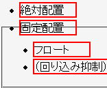
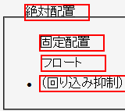

リストアイテム要素（display: list-item; を指定した要素）を絶対配置したり、フロートにしたりするとdisplayプロパティがblock値に変更され、リストマーカーが消えてしまう。
<style type="text/css">
li {
border: 2px solid red;
margin: 2px;
}
</style>
<ul>
<li style="position:absolute; width:5em; left:3em; top:1em;">絶対配置</li>
<li style="position:fixed; width:5em; left:3em; top:2em;">固定配置</li>
<li style="float:left; width:5em;">フロート</li>
<li style="clear:left;">（回り込み抑制）</li>
</ul>
全てのリストアイテムにはリストマーカーが表示されるはずです。
N7.02での表示（標準モード）
WinIE6.0での表示（標準モード）
WinIE5.5、WinIE6.0標準モード、WinIE6.0互換モードで不具合の発生が確認されました。